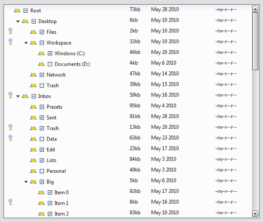

VirtualTree¶
The VirtualTree is a widget based on the framework's virtual infrastructure.
Preview Image¶

Description¶
The qx.ui.tree.VirtualTree is based on the virtual infrastructure and supports single selection, multi selection, data binding and custom rendering.
Using the virtual infrastructure has considerable advantages when there is a huge amount of model items to render: Widgets are created only for visible items and reused. This saves both creation time and memory.
With the qx.ui.tree.core.IVirtualTreeDelegate interface it is possible to configure the tree's behavior (item renderer configuration, etc.).
Note
At the moment we only support widget based rendering for tree items, but we are planning to also support HTML based rendering in a future release.
Code Example¶
Here's an example. We create a simple tree example with 2500 items and log each selection change.
//create the model data
var nodes = [];
for (var i = 0; i < 2500; i++)
{
nodes[i] = {name : "Item " + i};
// if its not the root node
if (i !== 0)
{
// add the children in some random order
var node = nodes[parseInt(Math.random() * i)];
if(node.children == null) {
node.children = [];
}
node.children.push(nodes[i]);
}
}
// converts the raw nodes to qooxdoo objects
nodes = qx.data.marshal.Json.createModel(nodes, true);
// creates the tree
var tree = new qx.ui.tree.VirtualTree(nodes.getItem(0), "name", "children").set({
width : 200,
height : 400
});
//log selection changes
tree.getSelection().addListener("change", function(e) {
this.debug("Selection: " + tree.getSelection().getItem(0).getName());
}, this);
Demos¶
Here are some links that demonstrate the usage of the widget: